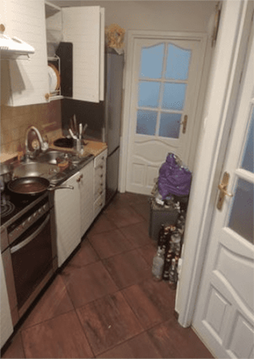

Mieszkanie w Olsztynie na ulicy Sznycdefonsa Gałczyńskiego zamieszkane przez kilku żuli: Piotra,
Pawła i Szymona

Chata po posprzątaniu
Opis
Mieszkanie składa się z trzech osobnych pokoi, lazienki i kuchni, która pełni rolę przedpokoju i korytarza.
Pierwszy pokój od wejścia zamieszkuje Piotr, pokój ten uchodzi za najczystrzy i najbardziej
pożądany w mieszkaniu. Następnie mamy do dyspozycji małą studencką łazienkę. Po niej przechodzimy do pokoju z którego wyłania się odór conajmniej
stada dzikich krów a mieszka w nim Szymon. Ostatni pokój w mieszkaniu to zarazem swego rodzaju salon, w którym dzieją się
wszystkie eventy w mieszkaniu a zamieszkuje go Paweł.